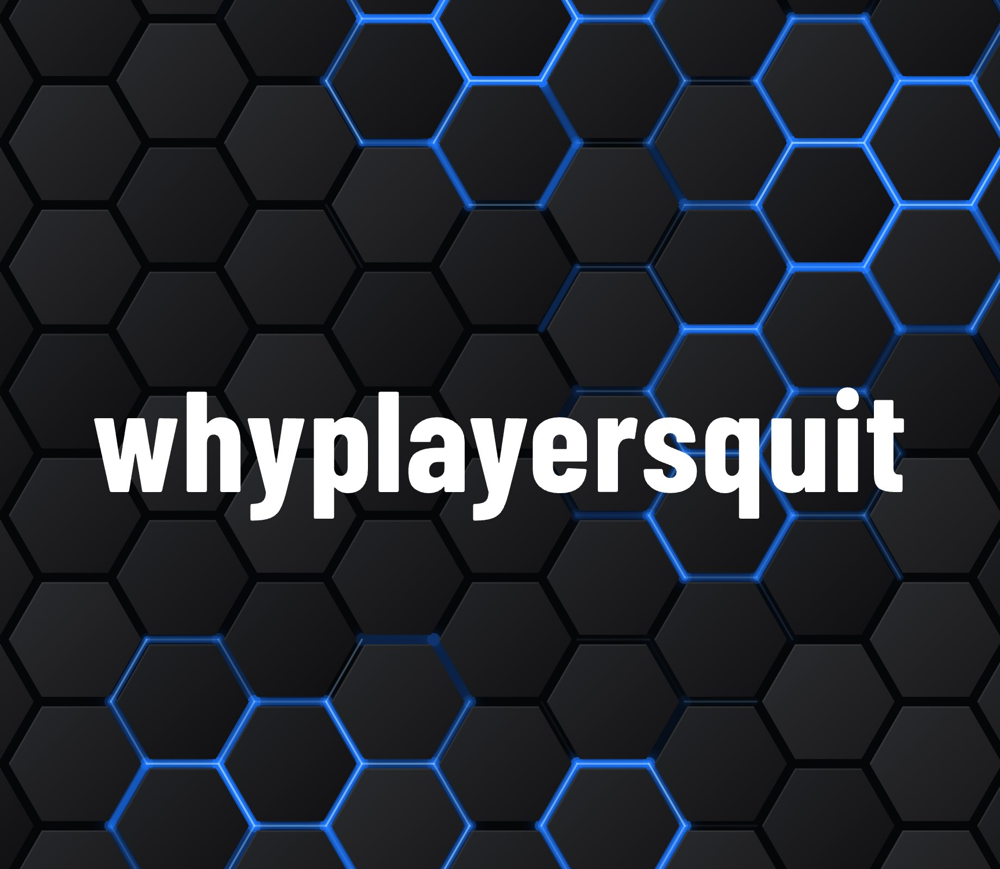

whyplayersquit
Player analytics · Independent research site · 2026 — present
An independent research site that follows games over time and asks which complaints in public Steam reviews actually come before players quit. Each game is its own project, and every run adds a dated report built with the same method.
Visit the site